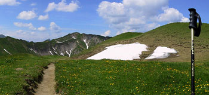

Het land achter de valreep
vrijdag 4 april 2003 | Persoonlijk
Als je het woord ‘deadline’ letterlijk neemt, dan heb ik er deze week een reeks bijna-dood-ervaringen opzitten. Meer zelfs: ik moest er een paar keer het loodje bij neerleggen. Maar zie! Mijn beide benen hielden stand! En dat is maar goed ook, want ze zullen mij gedurende de komende 7 dagen over Spaanse bodem moeten dragen. Ik vertrek deze nacht om 5.00 met drie kameraadjes richting Pyreneeën voor een weekje canyoning, bergwandelen en wat geklauter. En niet in de minste plaats voor de prachtige natuurschat die dit Europees stuk land nog herbergt: meneer Gypaetus barbatus, here I come! Gisterennacht kon ik de kracht nog vinden om – voor het eerst sinds maanden – een streepje te joggen langs de Schelde. Kwestie van me na twee dagen bergwandelen van stijve spieren te bewaren. Vanavond loop ik gewoontegetrouw mijn mega-reislijst af en dan … [no words – only happiness]
Als ik volgende week zondag terugkom van mijn omzwervingen staat er een gloednieuwe pc te pronken in een pas ingericht huis! Vrouwlief zag het niet zo goed zitten om -10° te trotseren in een tentje, en bleef daarom liever hier om wat voort te doen met de verhuis. Dat wil bijgevolg ook zeggen dat er enkel mannen mee zijn deze keer. Hoe jammer toch ;-)
Ik sluit af met een venijnige zet door jullie allemaal jaloers achter te laten. Klik op de foto en kwijl rijkelijk. Tot volgende week!

orfelio op 4 april 2003
En wat voor een kwijl één van 5997 pixels lang.
Miljaar.